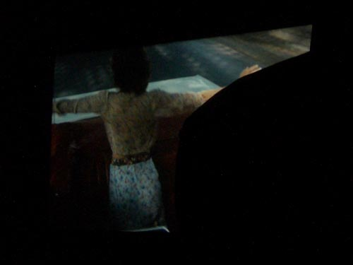
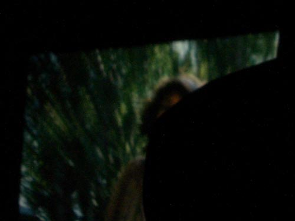

| < | > |
| the joy of going backwards | [2006-06-19 01:17] |
| there's a moment in Antonioni's The Passenger where Maria Schneider's character asks Jack Nicholson's character what he he running from - he tells her to turn around and look in the direction opposite to which they are traveling - she climbs up in the car seat and for a moment we see the trees rushing behind her
  maybe Chelsea Cinema King's Road 1975 or 6 - brief images can last a long time |
|
|
|